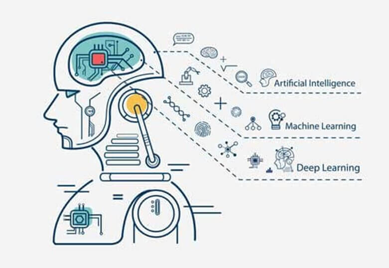
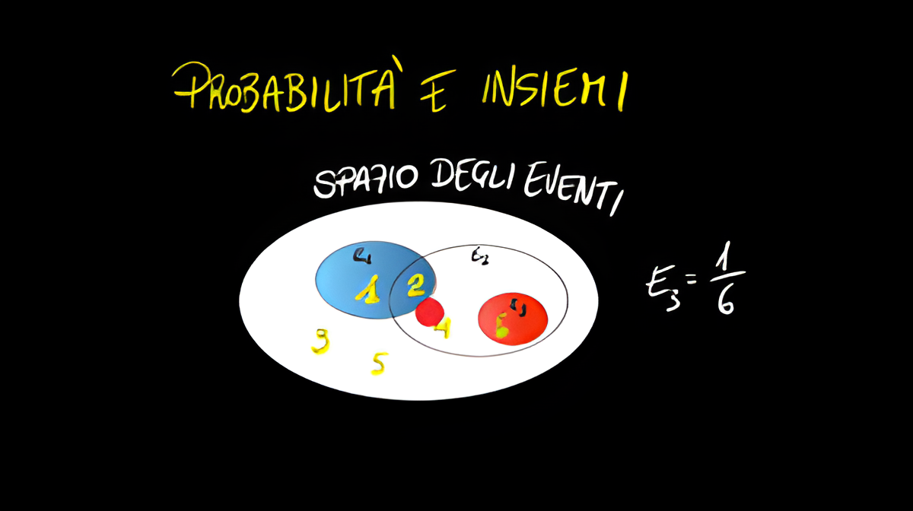

Materie
Informatica, Sistemi e Reti, TPSIT, IA, Matematica & GPOI
Argomenti affrontati:
Docenti: Prof.ssa Maria Laura Romagnoli - Prof. Andrea Lolli - Prof. Angelo Bracaccini
Argomenti affrontati:
Docenti: Prof. Mirko Ricci - Prof. Andrea Cacciamani
Argomenti affrontati:
Docenti: Prof. Stefano Bartoloni - Prof. Elisabetta Zingaretti

Argomenti affrontati:
Docenti: Prof. Nicola Falcionelli - Prof.ssa Elisabetta Zingaretti
Argomenti affrontati:
Docenti: Prof.ssa Monica Iommi

Argomenti affrontati:
Docenti: Prof. Luca Fabbracci